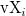

/math-cc693045aa2161426c9f2b97f77a6a49.png "\text{vY}_i") is ith element in vector vY.
is ith element in vector vY.z = ks2density(x, y, vX, vY, wx, wy) returns the 2D kernel density at point (x, y) with respect
to a function established by datasets (vX, vY) with scale (wx, wy), where scale (wx, wy) are determined by estimation function Kernel2width.
where n is the number of elements in vector vX or vY,  is ith element in vector vX and is ith element in vector vY.
/math-9dd4e461268c8034f5c8564e155c67a6.png "x") (input, double)
(input, double)/math-415290769594460e2e485922904f345d.png "y") (input, double)
(input, double)/math-dc072f8459258f6cfa11f1d4178e8ffc.png "\text{vX}") (input, vector)
(input, vector)/math-4dd5f9a976d0e27c4c9f2ed04a9c2558.png "w_x > 0")
/math-e939f0323d8d49a8482b30a5284c8374.png "w_y") (input, double)
(input, double)/math-6f306a2665477247b1b171b197840b6b.png "w_y > 0")
/math-fbade9e36a3f36d3d676c1b808451dd7.png "z") (output, double)
(output, double)/math-90cbc22edf225adf8a68974f51227f05.png "(x,y)") with respect to a function established by datasets (vX,vY) with scale
with respect to a function established by datasets (vX,vY) with scale